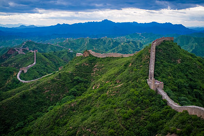
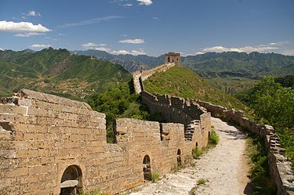
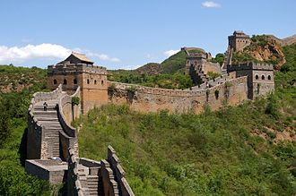

Сім нових чудес світу — проект, організований фондом «Нові сім див світу» (NOWC), який намагався об'єднати сім чудес стародавнього світу із списком сучасних чудес з метою збереження культурної спадщини для майбутніх поколінь, аби уникнути повторення ситуації з сімома стародавніми дивами світу. Переможці оголошені 7 липня 2007 року в Лісабоні (Португалія). Голосування проходило за допомогою SMS, телефону або Інтернету.
Вели́кий кита́йський мур (кит. 长城, пін. chángchéng, «довга стіна») — низка кам'яних та земляних укріплень у північній частині Китаю, збудованих з метою захисту північних кордонів Китайської імперії від вторгнень різних кочових племен. Археологічне дослідження 2008 року дійшло висновку, що Великий мур, побудований в епоху династії Мін (1368—1644), з усіма його секціями простягається на 8 851,8 км. Ця довжина складається з 6259 км самого муру, 359,7 км траншей та 2 232,5 км природних захисних бар'єрів, таких як гори та річки Його загальна протяжність згідно з результатами 2012 року становить 21 196,18 кілометрів.